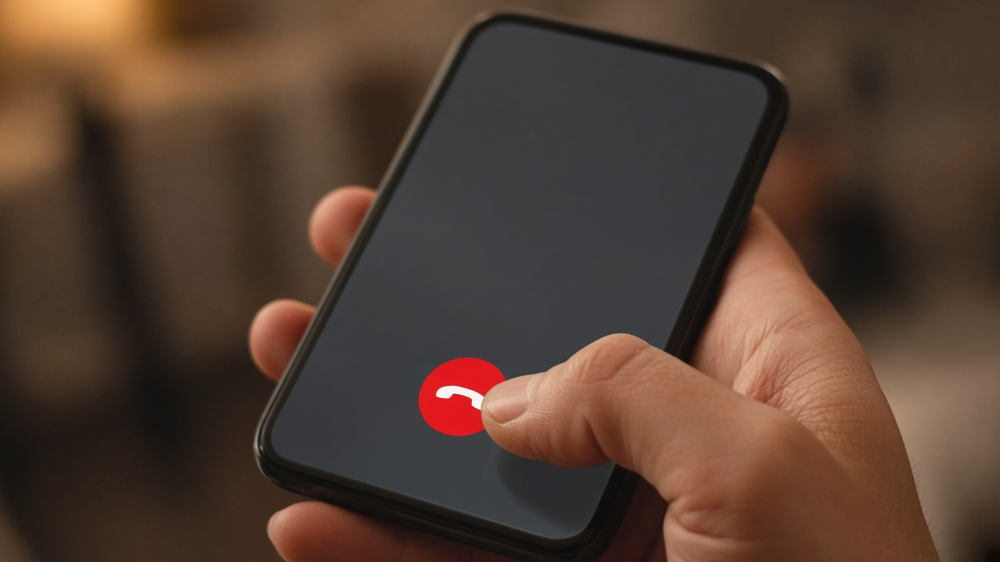

주민센터에 내 신분증과 위임장을 든 사람이 왔다는 전화, 금감원이 경보를 낸 릴레이 사칭 보이스피싱
어느 날 주민센터라며 전화가 와서, 누군가 내 신분증과 위임장을 들고 등본을 떼러 왔다고 하면 누구라도 덜컥 겁이 날 거예요.
그런데 금융감독원은 이런 전화는 보이스피싱이라고 분명하게 말하고 있어요.
금감원이 11월 12일 이 수법에 대해 주의 단계 소비자경보를 냈고, 실제로 한 피해자는 사흘 만에 1억 원을 잃었다고 해요.
어떤 순서로 속이는지, 전화를 받았을 때 무엇부터 확인하면 되는지 차례로 정리해 볼게요.
주민센터 전화로 시작해 은행 지점장까지 이어지는 수법
금감원이 확인한 사례를 보면 첫 전화는 주민센터 직원을 사칭한 사람이 걸어 와요.
신분증과 위임장을 가진 사람이 서류를 떼러 왔는데 확인하려 하자 급히 나갔다며, 신분증을 잃어버린 적이 있는지 묻는 식이에요.
피해자가 잃어버린 적이 없다고 하면 명의도용이 걱정되니 신고해 보라며 신용정보원이나 금융감독원이라는 가짜 전화번호를 알려줘요.
그 번호로 전화를 거는 순간부터 금감원 직원, 수사기관 직원, 마지막에는 은행 지점장까지 차례로 등장하지만 실제로는 처음부터 끝까지 같은 범죄조직이에요.
금감원은 이 과정을 미끼, 릴레이 기관 사칭, 공포와 고립, 돈 빼앗기의 네 단계로 설명했어요.

자산 검수와 국가 관리라는 말이 나오면 사기예요
사기범들은 명의도용으로 범죄에 연루됐다며 자산 검수를 해야 한다거나, 구속되기 싫으면 시키는 대로 하라고 겁을 줘요.
망설이면 재산은 국가가 관리하다가 수사가 끝나면 피해 없이 돌려준다는 말로 송금을 재촉한다고 해요.
금감원은 금감원과 공소청, 중대범죄수사청, 경찰은 어떤 명목으로도 돈을 보내라고 요구하지 않는다고 강조했어요.
수사를 이유로 예금을 보내면 나라가 대신 맡아 주는 제도도 없고, 금감원은 전화로 사건을 접수해 담당 검사를 연결해 주지도 않아요.
현금이나 수표, 골드바를 전달하라는 요구, 누구에게도 알리지 말라는 말도 모두 사기의 신호로 보면 돼요.
전화를 받았다면 끊고 직접 확인하세요
이런 전화를 받으면 상대가 알려준 번호로 다시 걸지 말고 일단 끊는 게 먼저예요.
그다음 정부민원안내콜센터 110으로 주민센터 번호를 확인하거나, 가까운 주민센터에 직접 가서 실제로 서류 발급 시도가 있었는지 물어보면 돼요.
한국신용정보원은 명의도용 신고를 받지 않는다고 하니, 신용정보원으로 연결해 준다는 말 자체를 의심해야 해요.
명의도용을 해결해 준다며 앱을 깔라고 하면 휴대전화를 원격으로 조종하는 악성 앱일 가능성이 높으니 설치하지 마세요.
내 명의 계좌와 휴대전화 개통은 이렇게 조회해요
내 이름으로 계좌가 만들어졌다는 말이 걱정된다면 금융결제원 어카운트인포에서 내 명의로 열린 예금과 대출 계좌를 직접 확인할 수 있어요.
휴대전화가 몰래 개통됐는지는 한국정보통신진흥협회 명의도용방지서비스 엠세이퍼의 가입사실현황조회에서 볼 수 있고, 새 휴대전화 개통을 막는 가입제한도 신청할 수 있어요.
신분증 사진이나 계좌번호가 이미 노출됐다면 금감원 개인정보노출자 사고예방시스템에 등록해 새 계좌 개설이나 카드 발급을 제한하는 방법도 있어요.
조회는 꼭 내가 직접 찾아 들어간 공식 누리집이나 앱에서 하고, 문자나 전화로 받은 링크는 누르지 않는 게 좋아요.
이미 돈을 보냈다면 지급정지부터 요청하세요
혹시 돈을 보냈다면 바로 경찰 112나 돈을 보낸 금융회사 콜센터에 전화해 지급정지를 요청해야 해요.
금감원은 주민센터뿐 아니라 법원 등기 반송, 택배와 카드 배송처럼 일상에서 흔히 받는 연락도 미끼로 쓰인다고 안내했어요.
처음 연락 방식은 달라도 알려준 번호나 링크로 끌어들인 뒤 기관을 사칭해 돈을 요구하는 구조는 같으니, 이런 연락은 끊고 법원이나 카드사, 택배사에 직접 확인하세요.
부모님처럼 이런 전화에 놀라기 쉬운 가족이 있다면 주민센터는 전화로 수사기관을 연결해 주지 않는다는 점을 미리 함께 이야기해 두면 도움이 돼요.
참고 자료 금융감독원 소비자경보 2026년 제28호 주민센터 사칭 보이스피싱 2026년 11월 12일 발령, 연합뉴스와 한겨레 2026년 11월 12일 보도, 하나은행 개인정보 유출 시 처리 안내
태그 보이스피싱 주민센터사칭 기관사칭 금감원소비자경보 명의도용 어카운트인포 엠세이퍼 지급정지 금융사기 개인정보노출자